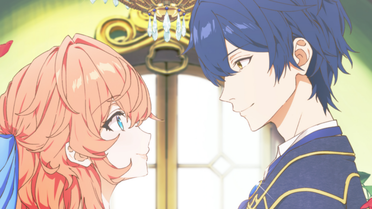
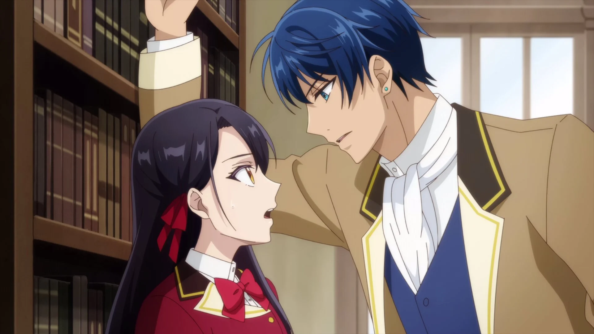
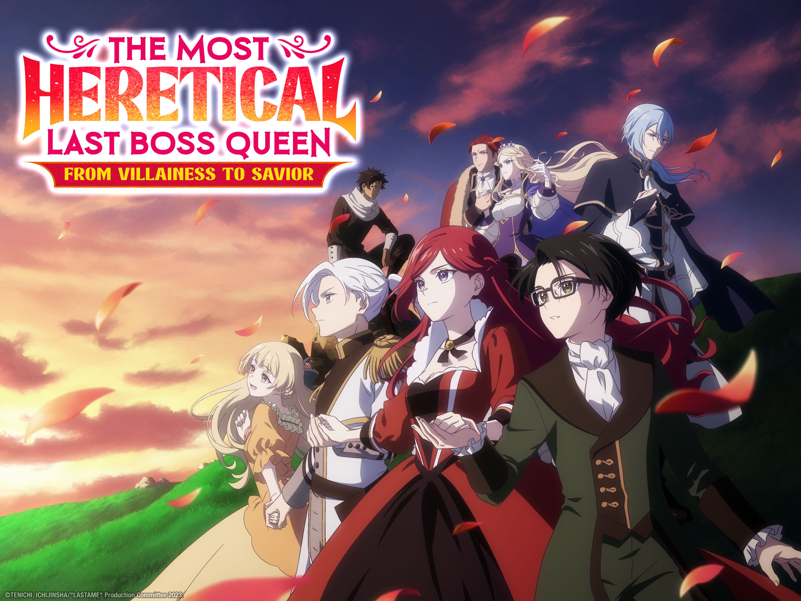
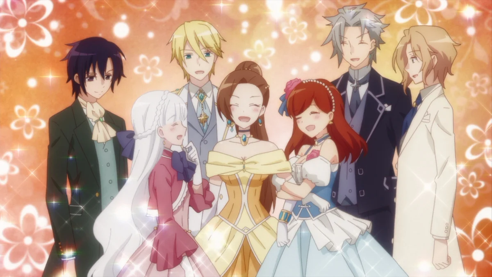

SMASH Senpai
Top 10 Villainess Anime Where the “Bad Girl” Becomes the Smartest Player (2026)
Most stories place the protagonist in the role of a hero — chosen by destiny, blessed with power, and loved by the world.
Villainess anime flips that fantasy on its head. Instead of being saviors, these female leads wake up as the antagonist — doomed characters fated for exile, disgrace, or death.
Armed with future knowledge or hard-earned experience, they must outsmart fate itself. Every choice matters. Every relationship is a risk. And one wrong move can trigger the very ending they’re trying to avoid.
What makes this genre special isn’t just romance — it’s reinvention. These stories focus on survival, political maneuvering, and rewriting a narrative that was never meant to be kind.
These are the Top 10 Villainess Anime — where being the “bad girl” isn’t the end of the story… it’s the beginning of taking control.
Sponsored
#10 The Villainess Is Adored by the Prince of the Neighbor Kingdom
The Villainess Is Adored by the Prince of the Neighbor Kingdom flips the traditional villainess setup by removing the usual doom flags entirely. Instead of fighting to avoid exile or execution, the protagonist finds herself reincarnated as a so-called villainess whose reputation is far worse than her reality.
Tiararose, labeled a villainess by circumstance, is neither cruel nor manipulative. She’s kind, socially awkward, and painfully unaware of how others perceive her. Her greatest weapon isn’t schemes or future knowledge — it’s sincerity. That alone begins to dismantle the narrative written against her.
What elevates this series is how it treats misunderstanding as the real antagonist. Political assumptions, rumors, and rigid social roles create conflict, not personal malice. When the prince of a neighboring kingdom sees through the labels, the story shifts from survival to emotional and political growth.
Unlike darker villainess stories, this anime leans into warmth. Romance develops gently, driven by mutual respect rather than obsession or convenience. The villainess doesn’t need to outsmart everyone — she simply needs to be herself consistently.
This entry earns its spot for proving that not every villainess story needs cruelty or tragedy. Sometimes, the smartest move is refusing to play the role at all.
- Episode count: 12
- Genre: Romance, Fantasy, Isekai
- Known for: Gentle villainess subversion
- Core theme: Kindness dismantles false narratives

play anime smash or pass here (not sponsored)
SMASH SENPAI – Smash or Pass#9 The Dark History of the Reincarnated Villainess

The Dark History of the Reincarnated Villainess stands out immediately by attacking one of the genre’s most painful ideas — your embarrassing past self becoming canon. Instead of reincarnating into a polished otome world, the protagonist is reborn inside a story she wrote herself during her most cringe-inducing years.
That story, known as her “dark history,” is filled with edgy dialogue, over-the-top villains, and melodrama she desperately wants erased. Unfortunately, she’s reincarnated as the villainess at the center of it all. Every bad decision, every dramatic monologue, now has consequences.
What makes this anime special is how self-aware it is. The villainess isn’t just fighting fate — she’s fighting her own writing habits. Tropes she once loved now threaten her survival. Knowledge becomes a curse, because she knows exactly how bad things are supposed to get.
Comedy plays a huge role, but the emotional core is real. Regret, self-reflection, and growth are baked into the narrative. The protagonist doesn’t just want to survive — she wants to rewrite herself.
This anime earns its ranking by turning embarrassment into strategy. It proves that growth doesn’t come from erasing your past, but confronting it and choosing better.
- Episode count: 12
- Genre: Comedy, Fantasy, Isekai
- Known for: Meta humor, self-awareness
- Core theme: Owning and rewriting your past
Sponsored
#8 I’ll Become a Villainess Who Goes Down in History
I’ll Become a Villainess Who Goes Down in History takes a bold approach by letting the protagonist fully embrace the villainess role — not to survive, but to dominate the narrative. From the beginning, she decides that if she must be a villain, she’ll be remembered as the greatest one.
Unlike most villainess leads who try to soften their image, this protagonist leans into ambition. She studies politics, economics, and power structures with the intention of reshaping the world. Intelligence, preparation, and long-term planning define her rise.
What sets this anime apart is its focus on legacy. The villainess isn’t reacting to events — she’s orchestrating them. Every move is calculated not just for survival, but for historical impact. This makes the story feel grand, strategic, and refreshingly unapologetic.
Morality is intentionally blurred. The anime doesn’t ask whether her actions are good — it asks whether they’re effective. Power is treated as a tool, and consequences are faced head-on, not avoided through coincidence.
This entry deserves its spot for delivering a villainess who doesn’t want redemption. She wants remembrance. And she’s smart enough to earn it.
- Episode count: 13
- Genre: Fantasy, Drama, Isekai
- Known for: Ambitious villainess lead
- Core theme: Legacy over redemption
#7 Endo and Kobayashi Live! The Latest on Tsundere Villainess Lieselotte

Endo and Kobayashi Live! stands out instantly by breaking the fourth wall in a way no other villainess isekai does. Instead of reincarnating directly into the story, two modern commentators actively narrate and influence the otome game world in real time.
At the center of this chaos is Lieselotte, a classic tsundere villainess doomed by misunderstanding. Her sharp words and cold behavior mask insecurity, fear, and genuine affection — but the game world interprets her actions as pure malice. Without intervention, her fate is sealed.
What makes this anime special is how empathy becomes power. Endo and Kobayashi translate Lieselotte’s tsundere behavior into emotional truth, helping other characters finally understand her. Instead of changing events directly, they change perception — and that changes everything.
Romance here feels earned because it’s built on communication. The male lead doesn’t fall for the villainess because of destiny or shock value, but because he finally understands what she’s been trying to say all along.
This anime earns its ranking by turning commentary into salvation. It proves that villainesses don’t always need new power — sometimes, they just need to be understood.
- Episode count: 12
- Genre: Romance, Fantasy, Comedy
- Known for: Meta storytelling, tsundere deconstruction
- Core theme: Understanding changes fate
Sponsored
#6 I’m in Love with the Villainess

I’m in Love with the Villainess completely flips the genre’s usual goal. Instead of avoiding the villainess route, the protagonist reincarnates with one clear objective — to romance the villainess herself. Fate isn’t something to escape here. It’s something to pursue aggressively.
Rei Taylor uses her future knowledge not for survival, but for emotional persistence. She openly confesses, flirts relentlessly, and refuses to give up — even when rejection is constant. What starts as comedy slowly transforms into a deeper exploration of identity, power, and social expectations.
Claire, the villainess, begins as arrogant, prideful, and emotionally guarded. But as Rei dismantles her defenses, the story reveals vulnerability beneath cruelty. The villainess isn’t evil — she’s isolated.
This anime also stands out for addressing classism, privilege, and societal pressure. Romance doesn’t erase inequality — it challenges it. The villainess arc becomes a story of self-acceptance, not just love.
Ranked high for its boldness, this series proves that villainess isekai doesn’t need subtlety to be powerful — honesty can be just as sharp.
- Episode count: 12
- Genre: Yuri, Fantasy, Isekai
- Known for: Direct romance, social themes
- Core theme: Loving without apology
#5 I’m the Villainess, So I’m Taming the Final Boss

I’m the Villainess, So I’m Taming the Final Boss is one of the genre’s most decisive power plays. Instead of slowly avoiding bad endings, the protagonist immediately targets the source of destruction — the demon king himself. Survival here requires boldness, not caution.
Aileen, armed with game knowledge, understands that subtle fixes won’t save her. So she proposes marriage to the final boss. What could have been absurd becomes strategic brilliance. By aligning herself with ultimate power, she rewrites the entire route.
The romance develops through negotiation, trust, and mutual benefit. The demon king isn’t softened instantly — he’s curious, guarded, and dangerous. Aileen survives by intelligence, adaptability, and emotional awareness.
What makes this anime satisfying is its momentum. There’s no endless stalling. Every episode pushes forward — relationships evolve, threats escalate, and consequences matter. The villainess isn’t reactive. She’s proactive.
This entry earns #5 for delivering a villainess who doesn’t wait for fate to act. She grabs it, negotiates with it, and bends it to her will.
- Episode count: 12
- Genre: Romance, Fantasy, Isekai
- Known for: Aggressive pacing, demon king romance
- Core theme: Control fate through action
Sponsored
#4 The Most Heretical Last Boss Queen: From Villainess to Savior
The Most Heretical Last Boss Queen takes the villainess concept to its most extreme conclusion. The protagonist reincarnates not as a minor antagonist, but as the final boss — a tyrant responsible for mass suffering, betrayal, and destruction. There is no small-scale doom to avoid. The entire world is at stake.
Instead of erasing her identity, Pride accepts it. She knows exactly what kind of monster she is supposed to become. Armed with future knowledge, she actively dismantles the systems of cruelty she would have enforced — rewriting political outcomes, protecting those once doomed, and correcting power imbalances.
What sets this anime apart is its moral weight. Pride doesn’t gain redemption through romance alone. She takes responsibility for crimes not yet committed and works tirelessly to prevent them. Every act of kindness is deliberate.
The villainess here isn’t misunderstood — she truly was meant to be evil. That makes her transformation more impactful. Salvation is earned through sacrifice, restraint, and painful self-awareness.
Ranked #4 for its scale, this anime proves that even the darkest villainess can become a savior — not by denying fate, but by shouldering its weight.
- Episode count: 12
- Genre: Fantasy, Drama, Isekai
- Known for: High-stakes redemption arc
- Core theme: Responsibility over destiny
#3 7th Time Loop: The Villainess Enjoys a Carefree Life Married to Her Worst Enemy!

7th Time Loop is built on exhaustion. The protagonist has already lived — and died — six tragic lives. Each timeline ends with betrayal, war, or execution. By the seventh reincarnation, survival isn’t enough. She wants peace.
Her solution is unexpectedly bold. Instead of fighting fate, she marries the man who killed her in previous timelines. What could have been madness becomes calculated strategy. Knowledge from six lifetimes turns fear into leverage.
The romance here is slow, tense, and layered with distrust. The male lead isn’t softened instantly. He remains dangerous. But through patience, competence, and emotional intelligence, the villainess reshapes their relationship.
This anime excels in showing growth through repetition. Every loop sharpens her instincts. Every mistake becomes data. Power doesn’t come from magic — it comes from experience.
Ranked #3 for its maturity, 7th Time Loop transforms reincarnation into a tool for wisdom, proving that intelligence can be more powerful than fate.
- Episode count: 12
- Genre: Romance, Fantasy, Drama
- Known for: Multi-life character growth
- Core theme: Mastery through experience
#2 Villainess Level 99: I May Be the Hidden Boss but I’m Not the Demon Lord

Villainess Level 99 approaches the genre with deceptive simplicity. The protagonist reincarnates as a hidden boss — absurdly overpowered, feared by the world, and destined to be eliminated. Yet her only real goal is to live quietly.
Power here is treated as inconvenience. Every attempt to stay unnoticed only makes her stand out more. Her strength warps reality, forcing the world to acknowledge her existence whether she wants it or not.
What elevates this anime is restraint. Unlike typical power fantasies, dominance isn’t celebrated. The villainess constantly suppresses herself, navigating politics, relationships, and fear without brute force.
Romance develops cautiously, built on curiosity rather than awe. The male lead isn’t blinded by power, but intrigued by her calm, awkward honesty. The dynamic feels grounded despite absurd strength gaps.
Ranked #2 for balance, this anime proves that true control isn’t about overwhelming power — it’s about choosing when not to use it.
- Episode count: 12
- Genre: Comedy, Fantasy, Isekai
- Known for: Subtle OP protagonist
- Core theme: Strength through restraint
#1 My Next Life as a Villainess: All Routes Lead to Doom!
My Next Life as a Villainess is the foundation of the modern villainess isekai genre. Without it, this entire subgenre wouldn’t exist in its current form. The premise is simple — reincarnate into a doomed villainess and avoid every bad ending.
Catarina Claes isn’t powerful, calculating, or intimidating. Her greatest weapon is sincerity. By treating everyone with kindness, she unknowingly dismantles every flag meant to destroy her.
What makes Catarina iconic is her innocence. She misunderstands romance, misreads danger, and accidentally builds a reverse harem — all while genuinely trying to survive. Her lack of malice becomes revolutionary.
This anime balances comedy with emotional warmth. Villainy is replaced not by dominance, but by empathy. Fate doesn’t collapse violently — it gently unravels.
Ranked #1 for influence, My Next Life as a Villainess didn’t just win the game — it rewrote the rules for every villainess that followed.
- Episode count: 24 (2 seasons)
- Genre: Comedy, Romance, Isekai
- Known for: Genre-defining impact
- Core theme: Kindness changes destiny
Play Smash or Pass on SMASH Senpai.
 PLAY SMASH OR PASS
PLAY SMASH OR PASS